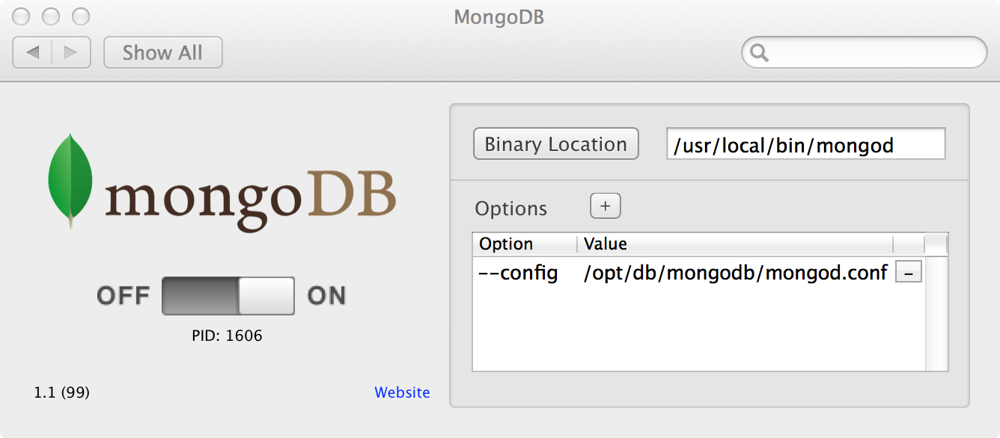

Prerequisites
Does not include MongoDB binaries, therefore you first need to install them from http://www.mongodb.org/downloads
Installation
- Download the binary of the latest release
- Extract it
- Double-click the
MongoDB.prefPanefile
Problems, Bugs, Ideas, Praise
Please open a ticket here.